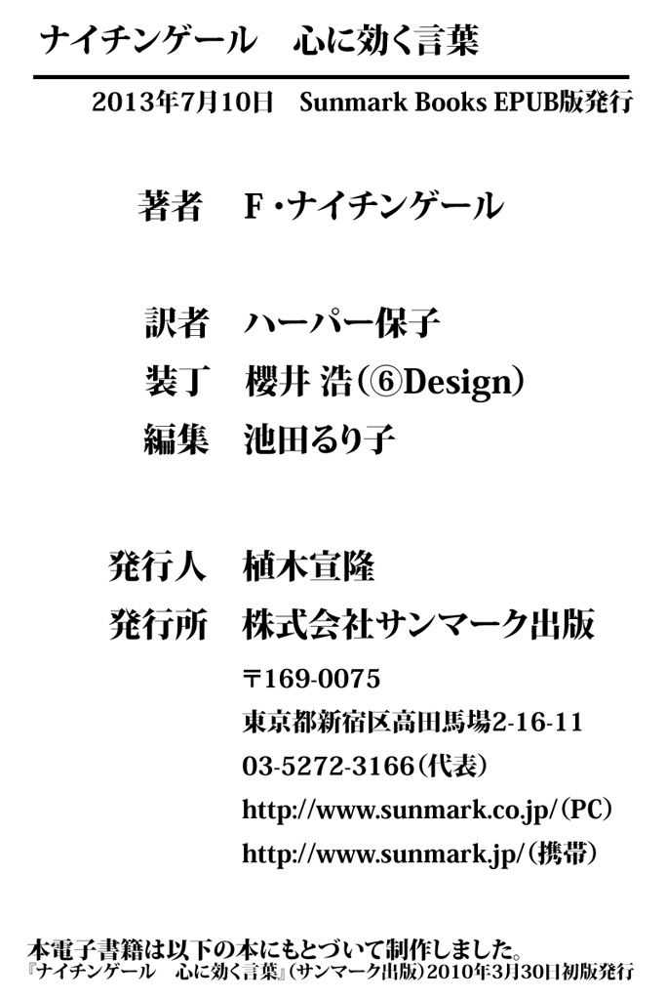

| ナイチンゲール 心に効く言葉 | |
| フローレンス ナイチンゲール | |
| (2010) | |
この本は縦書きでレイアウトされています。
また、ご覧になる機種により、表示の差が認められることがあります。
本電子書籍は、購入者個人の閲覧の目的のためにのみ、ファイルの閲覧が許諾されています。
私的利用の範囲を超える転載、配信、送信等の行為、並びに本作品の内容の複製、改変、改ざん等の行為は著作権法上、禁じられています。
偉人と呼ばれる人たちについて、たいていの人は断片的な知識しかもっていないものです。そして、そこから一歩踏みこんで彼らの生涯を知ったとき、自分が思い描いていたイメージとの落差に驚いたりします。クリミア戦争でおおぜいの傷病兵士の命を救い、夜ごと灯りをかかげて患者のベッドを回った姿から「ランプの貴婦人」と呼ばれたフローレンス・ナイチンゲールは、その代表と言っていいでしょう。
クリミア戦争におけるナイチンゲールの活躍は、たしかにめざましいものでしたが、それは一看護師の働きという枠におさまるものではありませんでした。三十八名の看護師を率いて戦地に赴き、病院の劣悪な衛生環境を改善しようとするナイチンゲールの前に立ちはだかったのは、病院長や陸軍関係者をはじめとする、官僚主義にこりかたまった人々からの抵抗と妨害でした。ナイチンゲールはこれに対し、イギリス上流階級の令嬢として身につけた高度な教育と、人脈、財力を駆使して、病舎の改善と病院内の組織づくりに成功します。
戦争が終わり、イギリスに戻ったナイチンゲールは、亡くなるまでに膨大な著作や書簡、記録、メモを残しました。そのテーマは、看護や公衆衛生は言うまでもなく、病院建築、英陸軍改革、婦人問題、政治、宗教など、多岐にわたっています。なかでも有名なNotes on Nursing（『看護覚え書き』）はいまも版を重ね、看護にたずさわる人々に読み継がれています。
本書にはナイチンゲールの著書（Florence Nightingale To Her Nurses,Suggestions for Thought,Notes on Nursingの三冊）から選ばれた、現代にも通用する珠玉の言葉が収められています。ページのなかから聞こえてくるのは、「戦場の天使」のただやさしいだけの言葉ではありません。傑出した知性と指導力、組織力、企画力、意志力、行動力の持ち主であった女性からの、ときに手きびしい、けれど心からの助言と励ましの言葉です。テーマは病院や看護であっても、そこに綴られているのは、一般的な職場や人間関係にも十分通じる真理です。心に響く文章を見つけたら、どうぞ目を閉じて心のなかで、「病院」を「会社」や「家庭」に、「師長」「患者」を「上司」や「父（母）親」「子ども」「妻」「夫」に置きかえてみてください。時代を超えた普遍の真理が浮かび上がってくるはずです。
二〇一〇年三月
ハーパー保子
年ごと、月ごと、週ごとに
「進歩」を重ねていないかぎり、
自分は「退歩」していると思って
まちがいありません。
For us who Nurse, our Nursing is a thing, which, unless in it we are makingprogressevery year, every month, every week, take my word for it we are goingback.
（Florence Nightingale To Her Nurses）
世の中は、ことに病院内の世界はあまりにあわただしいため、自分で気づかないうちに悪い習慣が身についてしまうものです。さらに起こりやすいのは、一年間の訓練を実際にどう活かすかを具体的に考えないまま、訓練期間を終えてしまうことです。
結局のところ、どんな訓練もその目的は、自分自身を訓練する方法、自分でものごとを観察する方法、自分でものごとを考え抜く方法を私たちに教えることです。怠けるのは論外ですが、忙しさにまぎれて、一週目も二週目も、三週目も過ぎてしまったということのないようにしましょう。
（Florence Nightingale To Her Nurses）
自分の精神なり人格なりを「毎日」向上させようと真剣に考える女性は、あまりいないものです。これは私たちが進歩するうえで、致命的なことです。
私たちは過去の経験から未来を予想することをしません。
過去六か月のあいだに進歩していないのに、これからの六か月でそれができるなどと期待できるでしょうか？
（Florence Nightingale To Her Nurses）
私たちはまた、状況が変わることによって起こる変化を考慮することもしません。そのため、いまの自分にある、自分の仕事について学ぶのに必要な気力や機会が、これからもずっとあるように思っています。
そして何も改善しないまま、訓練の期間は終わってしまいます。やがて、自分の資質のあれもこれも、もっと改善できたかもしれないのにと気づいたときには、変わろうにも年をとりすぎていて、手遅れでどうしようもないのです。そして自分自身に向かって「私の人生は過ちの連続だった」と認めるのですが、認めさえしない人のほうが多いのです。
（Florence Nightingale To Her Nurses）
たとえほんの少しでも
自分をほめてやろうと思えるくらい、
私たちの思い上がった気持ちは
昨年より
ましになっているでしょうか？
May I pay ourselves even the least little compliment, as to our being a little less conceited than last year?
（Florence Nightingale To Her Nurses）
りっぱな女性であるためには、つねに向上していなければなりません。誰でも知っているように、よどんだ水も、よどんだ空気も、遅かれ早かれ腐敗して、使いものにならなくなってしまいます。
（Florence Nightingale To Her Nurses）
たしかシェイクスピア劇の主人公の一人に、こんなせりふがあります。
「私はわざわざ努力して、卑劣な人間になったのだ」
なるほどとうなずかずにはいられません。まさにこんなふうに一生を送る人たちが、世の中にはいるのです。そして、「些細な侮辱に対する復讐心に燃え、意地悪で卑劣で心の狭い、不機嫌な人間になることに多大な労力をついやした」覚えがないと言いきれる人など、一人もいないはずです。
ある女性が言っていました。
「人から傷つけられたり、悪口を言われたりしても、それが事実無根だったら、私にとって何の意味もないことです。人の悪意は私を襲う前に、神を襲います。もし神がそれをおゆるしになるなら、私もゆるすべきではないでしょうか。私は自分を愛するよりも神を愛したいのです」
きれいごとのようでいて、一抹の真実がある言葉だとは思いませんか？
（Florence Nightingale To Her Nurses）
優秀な看護師は、仕事を始めて何年たとうと、「私は毎日、何かを学んでいます」と言うものです。
私はこれまでの誰よりも、世界中のさまざまな病院を見てきましたが（私の若いころには、あなたがたのようにものを学ぶ機会はなかったのです）、もう一度歩きまわれるくらい体力が戻るものなら、また一からすべてを経験したいと思います。聖トーマス病院に来て、あなたがたのりっぱな総師長のもとで一年間の訓練を受けましょう（規則を守ることにかけて私の右に出る者はないと、総師長は認めてくださるはずです）。
過去の経験があるゆえに、実り多い学びの日々になることでしょう。
私は人生の最後の時まで、毎日学びつづけていたいものだと思います。「両脚切り落とされたあの男は、胴体引きずり戦いつづけた」という歌があります。私もいつか、人を看護しながら学ぶことができなくなったとき、今度は看護される側になり、この私の世話をする看護師たちを見て学びましょう。すべては経験になるのです。
（Florence Nightingale To Her Nurses）
言葉の由来をたどることに大きな関心が寄せられています。語源を知ることは、人間の考えをたどる手段です。それぞれの言葉について、この言葉がまだ一度も使われていなかったときがあったのだと考えたり、この言葉がはじめて人の口から発せられたとき、それはどのような考えや感情や感覚をもった結果だったのかと考えたりするのは、楽しいものです。
truth（真実）という言葉の語源はtroweth（信じる）だと言われています。つまり、人が「信じる」ものが「真実」だったというのです。
ここで、人間がおかしがちな誤りについて考察してみましょう。人はしばしば、「これは○○である」という絶対不変のものを見つけようとせず、「これは○○である」と自分が「信じる」もので満足してしまいます。それどころか、見る側の立場によって真実がちがってくるのだと主張するような人までおおぜいいます。
しかし、もし私たちが「真実」という言葉を、絶対不変の「これは○○である」という意味で使うなら、どんな人が見るかによって左右されることのない、絶対的な存在の状態を指しているのです。
（Suggestions for Thought）
私たちがいかなる環境においても善良でいられると考えるのは、下水溝の上に住んでいても健康でいられるだろうと考えるようなものです。
体に悪い気候の場所に行かなければならなくなった人は、「どんな気候のところでも、健康でいようと思えば健康でいられます」とは言いません。体にいい環境を整えられるよう、できるかぎり手を尽くすはずです。暑さがきびしければ運動は早朝のうちに済ませ、夜露が健康に悪いと思えば、日が暮れてからは外出しないよう気をつけるでしょう。
同様に、人が善良ではいられない環境があり、にもかかわらず当面はそれを改善できないということも考えられます。その場合、善良な自分でいるために必要なのは、「どんな環境にあっても、自分で念じさえすれば善良でいられます」と言うことではありません。最善を尽くして、自分を善良にしてくれる環境を整えることなのです。
（Suggestions for Thought）
私たちの心には、りっぱな人物になりたい、りっぱなことをしたいという願望が植えつけられています。
正しい自尊心をもつために、人は誰もが命令すべきです。自分のなかの能力も、自分が命じなければ完全に引き出すことはできません。命令ほど爽快で刺激に満ち、新鮮な気持ちにさせるものはありません。
また、正しい謙虚さをもつために、誰もが人に従うべきです。何をするにも確固たる自信をもち、私たちに学ぶことを教えてくれる人に従って、ああ、自分はいま何かを学んでいるのだと実感するのはなんとよろこばしいことでしょうか。学校の教師や授業からどれほど多くを学んでいるか、子どもたちに聞いてみればわかります。つまり、誰もが命令し、従うべきなのです。そうするともう、自尊心がどうだとか、自分はえらいとかいう話は聞こえてこなくなります。りっぱなことをしたいという、正しい形で表現できたはずの願望がゆがむと、いきすぎた自尊心になるのです。
一方で、「自尊心」を抑えこみ、いわゆる「謙遜」を求めてやっきになるのは、とても危険なことです。りっぱな人になりたい、りっぱなことをしたいと願うのは、自然な欲求なのです。その欲求を抑えつけることは、神が私たちにお与えになった行動への欲求を抑えつけることです。
謙遜は自分自身を卑下することであり、自分を他者よりも下に位置づけると同時に、他者もそうすべきであると望むことです。
それはずいぶんばかげていて、不誠実なことではありませんか？ 私が望むのは偽りの自己評価ではなく、正確な自己評価です。私は神が私をごらんになるように、自分を見たいのです。力自慢の人がまったく非力な人に向かって、「あなたは私より力があるから、私よりうまくあの木を切り倒せます」と言ったら、私たちは「そんなばかな！」と言うはずです。有名な歴史家のマコーレーが（謙遜しようとして）、「私の書く歴史の本など、いまストランド街を歩いているどの人の書くものにもかないません」と言い出したら、それは事実でしょうか？ あるいは好ましいことでしょうか？
「人には自分に何ができるか気づかせ、それを行わせよ」という格言は、謙遜の原理とは相容れないものです。謙遜を理論どおりに実行に移せば、私たちは行いのすべてを、自分よりもうまくできると思っている相手にゆだねることになるのです。
（Suggestions for Thought）
これは強く心に留めておくべきことですが、過去に起こったことが私たちにはどうしようもないからといって、私たちが現在と未来に対しても無力だということにはなりません。
もし私たちが、過去に何か災難が起こる原因になった特定の状況を変えることができ、また変えようとするなら、同じ災難が繰り返されることはないでしょう。
仮に、ある環境がかならず人間に特定の肉体的特徴を与え、その人のすべての能力がそこから生じるとしても、また仮に、つねに環境が人間に決定的な影響を与えているために、いまある自分が何らかの法則の結果にすぎないとしても、それは変えようがないことなのでしょうか。そのために人間は機械のようになってしまっているのでしょうか。正しさと調和してはいないのでしょうか。人間は力を与えられていないということになるのでしょうか。そうではありません。人間には、正しい肉体的状態を、そして正しい生活環境を手に入れる方法を見出す能力があるのですから。
（Suggestions for Thought）
私たちは自分にそなわった特徴を改善する力だけでなく、それぞれの特質にとって望ましい状態へ環境を整える力をももっています（私たちの人間性、すなわち意志を正しい状態に誘導するのが「望ましい」ということです）。
意志の源は感覚、思考、感情、精神状態で、それらは状況によって変化するものです。適切な状態をつくり出すことによって、人は正しい意志を手に入れることができるのです。
（Suggestions for Thought）
私たちが「知っている」
と言えるのは、
私たちが「できる」
ことだけです。
We onlyknowa thing if we candoit.
（Florence Nightingale To Her Nurses）
火の粉が服に降りかかっても、
火の粉のうちなら
消すことができますが、
服全体に炎が広がってしまっては
手遅れです。
互いに対する悪意ある感情も同じです。
A spark can be put out while it is a spark, if it falls on our dress, but not when it has set the whole dress in flames. So it is with an ill-tempered thought against another.
（Florence Nightingale To Her Nurses）
誰でも知っているとおり、友情には、とくに女性どうしの友情には、よろこびと悲しみだけでなく、危険と失望がつきものです。
自分より教育がある人たちや、学業や看護において自分よりすぐれている人たちとつきあいたいという、高潔な願いをもつ女性もいます。
あるいはまた、そういった面で自分より劣っている人たちとつきあう女性もいます。たぶんそのほうが居心地がよく、自分より上の人たちといると自尊心が満たされなかったり、しりごみしてしまったりするのでしょう。
同じ女性を品定めするようなことはよくありませんが（私たちを一人ひとりちがう人間につくられたのは神なのですから）、人生の大きな関心事である友情を、ただ運まかせにすることもできません。
真の友情は素朴で女性らしく、率直なものです。弱さ、愚かさ、溺愛、騒々しさ、おふざけ、やりすぎ、さらに嫉妬やわがままとは無縁です。そして、女性が本来もっている性質以上のものが求められます。というのは、女性どうしを結びつけるものは友情以外にもいろいろとあるからです。
また、相手の秘密に立ち入ろうとしたり、境遇に好奇心をもったりもせず、友の存在を心からよろこび、そばにいないときもその人を忘れないのが真の友情です。
（Florence Nightingale To Her Nurses）
若い日の友情は、激しすぎて続かないこともあります。若い友情は脆さや感傷のようなものをはらんでいて、そういった感情がなくなると、私たちはその友情を恥じるようになります。
あるいはまた、何か重大なときに友だちが力になってくれなかったために、友との「なつかしい昔」も苦い思い出になったりします。それでも（おそらくは気まぐれな理由で私たちから離れていった）「消え去った」友に対する義理というものがあるのですから、悪口を言ったり、その人について知っていることを利用したりするのは慎むべきだと心しましょう。
友情の思い出は、亡くなった友人の思い出のようなものなのですから、軽々しく語るものではないのです。
（Florence Nightingale To Her Nurses）
友が与え得る
以上のものを期待したり、
同情を求めて
うんざりさせたりしてはいけません。
Do not expect more of them than friends can give, or weary them with demands for sympathy.
（Florence Nightingale To Her Nurses）
病んだ肉体を丁重に看護するのは、慈悲のある行いです。精神を病んでいる人たちや厄介な患者を、丁重に忍耐強く看護するのは、さらに慈悲のある行いです。けれど、それよりもさらに慈悲に満ちた行為があります。
たとえば、自分に対して親切ではない人に親切にすること。自分に対して不愉快なふるまいをする人に、礼儀正しくふるまうこと。失礼なことをされたとき、あるいはされたと思ったとき、また、深く傷つけられたときにも、その場で相手をゆるすことです。
（Florence Nightingale To Her Nurses）
忍耐強く、ほがらかに、思いやりをもって。では、私たちに対して忍耐強く、ほがらかに、思いやりをもって接してくれる人たちにだけ、私たちもそうすればいいのでしょうか？ それなら、聖ペテロが言うように、不信心な人でもできることです。けれど、私たちに対して悪意あるふるまいをした人に善意をもって接することができれば、それはなんという栄誉でしょうか！
怒りっぽくて思いやりのない人にこそ、やさしくしましょう。
（Florence Nightingale To Her Nurses）
生きることによって、つまり自分自身であることによって他者の助けとなる──これこそ、真に人と調和することであり、人とのまじわりがもたらす真の恩恵ではないでしょうか。しかし一般的には、私たちは自分自身でいない生き方をしなければなりません。なんと疲れる生きかたでしょうか。
私たちが自分自身であることを恐れず、ともにいる人たちを満足させ、私たちが言うことや感じることが彼らを動揺させたり、悩ませたり、怯えさせたりしない状態にあるとき、人生は生きやすく、よい方向に向かっています。
そして私たちは進歩できるのです。
（Suggestions for Thought）
私たちは、自分の食事を患者に食べさせたり、自分の衣服を患者に着せたりすることを求められてはいません。
私たちは不自由のない生活をしていますし、わざと不自由な思いをするようなことはできません。しかし、患者のために病人食の作りかたを学ぶことはできます。身を飾りたてるのに夢中になって、自分や家族のために蓄えるべきお金を無駄に使ってしまうのをやめることはできます。
先の普仏戦争のおりの話です。
寒さのきびしいある日のこと、何千人もの哀れなフランス兵捕虜の大隊が、捕虜収容所を目指して、ドイツでもとりわけ大きく、けれど貧しい町の、そのなかでも非常に貧しい通りを歩いていました。
この「貧民街」の家々の扉は、どこも開け放たれていました。閉じられた扉は一つとしてなく、その奥からは貧しいドイツ人の婦人たちが、手に手に自分や夫や子どものために料理していた食事を持って出てきました。家からありったけの食べものを持ってきた婦人もおおぜいいました。そして、ひどく具合の悪そうな捕虜が通りかかると、その手に食べものを押しこんだり、あるいは疲れはててぬかるんだ道にくずおれた捕虜には、口にその食べものを入れてやったりしました。
哀れなフランス人捕虜たちを収容所まで護送する気のいいドイツ兵は、もう時間も遅く、自分たちも疲れきっていましたが、婦人たちが捕虜に近づけるように見て見ぬふりをしてやるのでした。
捕虜たちが収容所に入って一時間もしないうちに、六人がワラに横たわって息絶えました。しかし、善良な婦人たちがその夜差し出してくれた食べもののおかげで──それも、決してあり余るなかからではなく、貧しい暮らしのなかから持てるものすべてを差し出したおかげで──いくつの命が救われたのか、それは私たちではなく神のみがご存じです。
これは、その場でこのできごとを見ていた、「援助委員」の英国人男性から聞いた話です。
捕虜を乗せた汽車のほとんどが通っていた、ドイツのある大きな駅でのことです。長い、長い、凍えるような寒さの冬のあいだ、一人の女性が夜ごとこの駅を訪れ、一晩中、哀れなフランス人捕虜たちに食べものを与えたり、体を温めたり、なぐさめてやったりしました。また、死に際の言葉を聞いてやることもしばしばでした。
屋根も囲いもない貨物列車で運ばれてきた彼らは、ろくに衣服もまとわず、死ぬほどおなかをすかせて、ある者は体が冷えきっていて、またある者はすでに息がなく、ほかの捕虜たちは駅で息を引き取りました。ある者はまる九日間、雨ざらしの貨物列車に揺られ、多くの捕虜は二十四時間、食べものを口にしていませんでした。
来る夜も来る夜も、長い悲惨な列車の一団がゆっくりと駅に滑りこんでくると、女性はホームにひざまずき、死にゆく捕虜の頭を支え、母親に伝える遺言を聞いてやりました。また、ぶどう酒や温かいミルクを病人の口にふくませたり、凍傷にかかった手足を布でくるんだりして、多くの命を救ったのです。
町の捕虜病院に搬送された捕虜もおおぜいいて、そのうちの三分の二ほどが回復しました。彼女が持っていた布類は、こんなふうに残らず使われたのでした。このような苛酷な夜を重ねるうちに、彼女自身が不治の病にかかってしまいましたが、彼女の働きで何千人もが命をとりとめたのです。
実は、この女性は私の友人です。
このできごとのあと私を訪ねてきて、直接この話をしてくれました。水疱瘡や発疹チフスが捕虜たちのあいだで大発生しましたが、病人のほとんどはまだ少年と言っていいような年でした。多くは傷を負っていて、半数は凍傷にかかっていました。彼女が持っていったものをひったくるような者もいましたが、死にかけている捕虜のなかには、おいしそうな温かいぶどう酒から顔をそむけ、息もたえだえに、「ありがとうございます。でも、それは彼に飲ませてやってください。ぼくよりも彼のほうが必要ですから」、あるいは「ぼくはもう助かりません。母に愛していると伝えてください」と言う若者もいたそうです。
彼女とはちがい、私たちは自分のものを患者に差し出すことを禁じられています。けれど、だからといって、自分のすべてを──つまり自分の心と知性を、そして理にかなった奉仕を出し惜しみしてはいけないのです。
（Florence Nightingale To Her Nurses）
「憎む」ことによって、
私たちが向上することは
ありません。
It does not improve us tohateanything.
（Suggestions for Thought）
私たちが去年なしえたことを、
うぬぼれや自負の材料として
見るのではなく、
励みになってくれるものとして
見ましょう。
What we did last year we may look upon not as a matter of conceit, but of encouragement.
（Florence Nightingale To Her Nurses）
看護師であるということは、文字どおり、看護師であるということです。自分の気に入る仕事をまかされたときだけ看護師になるということではありません。
気に入らない仕事を与えられたから働けないというなら──患者をいつも看護師の都合に合わせるわけにはいかないのですから──それは、わがままな子どもや、ききわけのない女の子のようなふるまいであり、看護師のふるまいではありません。気に入らない仕事でも、高い志をもってやりつづけ、やがてその仕事が好きになれるかどうか。それがほんものの看護師になるための試練なのです。
（Florence Nightingale To Her Nurses）
「私の仕事ではないから」という理由で、患者のために何かをするのを断る看護師がいたら、看護はその人の天職ではなかったのだと言わざるをえません。
私の知っている外科の師長たちは、高給をとる技能をもちながら、病室や兵舎の床にひざまずき、どこもかしこも磨き上げていました。そうしなければ自分の患者が入るにふさわしくないと思ったからです。
私は看護師が掃除に身をやつすべきだとは、考えてもいません。そんなことはエネルギーの無駄遣いです。
けれど、彼らに真の看護魂があったのはまちがいありません。病人のためになることが第一であり、自分が何をすべき「立場」であるかなどは二の次でした。患者が苦しんでいるときに、これは家政婦がやるだろう、あれは清掃作業員の仕事だからと何もしないような人は、看護師としての「素質」がないのです。
（Notes on Nursing）
私の経験から、一つ言わせていただきます。
どんな訓練を受けても、その人が、まず感じることを学び、次にものごとを自分の力で考え抜くことを学ばなければ、役に立ちません。
そして私たちに真に敬虔な感情と目標がなければ、何よりも崇高であるはずの病院での生活が、単なるあわただしい日常業務に、しかもとても心をすさませるものになってしまうのです。
（Florence Nightingale To Her Nurses）
「私はいつも窓を開けます」と言う師長がよくいます。もちろん、誰もやらないよりは、はるかにいいことです。
けれど、あなたが自分でやらないときにも窓はちゃんと開けられているでしょうか？ あなたが背を向けているときにも、窓が閉まったままではないと、自信をもって言えるでしょうか？ それが「責任者」であるということの意味です。しかも、非常に重要な意味です。最初の師長の例は、あなたが自分の手でできることしか行われないということを、そのあとの例は、行われるべきことがかならず行われるということを示しています。
（Notes on Nursing）
現在（あまりに一般的に）行われているような形で患者に質問をしたり、患者について誰かに質問したりしていては、たとえ相手が十分な情報をもっていたとしても、何も引き出せません。質問は概して誘導尋問になりがちなものです。
何か質問する前に、この質問にはこんな答えがかえってくるにちがいない、と考えないのは不思議なことです。
たとえば、「あの患者さんは昨夜、何も問題がありませんでしたか？」と質問したとします。一度も目覚めることなく十時間眠れなければ、ゆうべは調子が悪かったと思う患者もいます。かと思えば、薬を飲むために何度か起きても、よく眠れたと思う患者もいるのです。
実際、二人の患者に関する質問に、まったく同じ答えがかえってきたことがあります。一人は五日つづけて一睡もできずに、それが原因で亡くなった患者。もう一人は、いつもは朝まで目覚めずに眠れるのに、それができなかった患者でした。
なぜ、「○○さんは昨夜、何時間眠りましたか？」「眠っていた時間帯は？」と質問できないのでしょうか。こういう尋ねかたをすれば、一睡もできなかった人と同じくらい多く、実際には何時間か眠った人からもかえってくる「一晩中、一睡もできませんでした」という答えは減るでしょう。意図的であれ無意識であれ、誘導尋問に対してよりも、明確な質問に対して、嘘はつきにくくなります。
もう一つのありがちな誤りは、トラブルの原因の一つだけについて、それがまだあるかどうかを質問し、それ以外のさまざまな原因から生じるトラブルがあるかどうか、質問しないことです。たとえば、「昨夜は通りがうるさくありませんでしたか？」と尋ね、うるさくなかったと患者が答えれば、それ以上の労をとることなく、その患者は「よく眠れた」と報告されます。この種の誘導尋問を受けると、患者はすっかりとまどってしまい、完全に誤解をまねくとわかっていても、求められただけの情報しか与えることができません。患者の気おくれというものは、めったに考慮されないのです。
五つか六つの鋭い質問で全体の状況を引き出し、患者の「現在の状態」を正確に把握し、報告できる人は、なんと少ないのでしょう。
（Notes on Nursing）
単なる世俗的な成功は、気高い精神にはふさわしくありません。アグネス・ジョーンズやほかのりっぱな看護師たちが、世俗的な成功を気にかけたと思いますか？ あのかたたちが関心をもっていたのは、能率的、徹底的に仕事をすることです。でもこれはまた別の話です。
私たちが心を落ち着けて自分の気性を振り返るとき、その多くに非があると認めなければなりません。無駄にしてしまった訓練の機会を思って嘆き悔い、よりよい女性、よりよい看護師になりたいと願わなければなりません。私たち誰もがそう感じなければならないのです。そう感じたとき、そのときはじめて、病んだ人々のあいだで送る「生活」と「仕事」が、祈りになるのです。
（Florence Nightingale To Her Nurses）
私たちは、ともに生きています。それならば、互いの心にやすらぎをもたらす生きかたをしたいものです。
私たちはみな、ともに働いています。ですから、この仕事が自分だけのささやかな楽しみなどではなく、もっと大きな意味のあるものだということを、しっかり理解してください。
（Florence Nightingale To Her Nurses）
自分は人よりすぐれていると思っている人たちは、人のお手本になりたいという気持ちが強すぎるのではないでしょうか。これに関連して、お話ししておきたいことがあります（私は自分のまちがいは正すことができないときもあるのに、人をたしなめることはいつもできるのです）。
それは、よい仕事に従事しながら、地位や階級や役職のことで、人をうらやんだり、こまかい点にこだわったりすることについてです。このような妬みをもつ人が傷つけているのは、他人ではありません。たとえ他人を傷つけているとしても、誰よりも自分自身を傷つけているのです！
自分の人格を磨き、気高さを身につける（人の役に立つことこそが真の気高さです）ために、神はこの仕事を与えてくださいました。けれども彼らは神が「この仕事を通じて身につけるように」と思われたものを手に入れていないどころか、逆のことをしているのです。
（Florence Nightingale To Her Nurses）
円滑にものごとが進む体制に不可欠なのは、全員が、ほかの人の仕事を妨げるのではなく、助けになるような形で自分の仕事をすることです。
ところが、そんな体制のなかにいるにもかかわらず、自分は不当に扱われていて、その理由が「○○さんといっしょにやらなければならないから」「○○さんといっしょにやれないから」だったり、「あんな役職についていないから」「こんな役職についているから」だったり、あるいは「先輩が私を踏みつけにするから」「先輩が私を蹴りつけにするから」（笑ってしまうでしょうが、こんなことが実際に言われているのです）などと言う人がいたら、それは神の平安を妨げ、神の思し召し（どんな仕事も神の思し召しです）を意味のないものにしてしまいます。
（Florence Nightingale To Her Nurses）
宗教組織とはちがって、看護学校にはより大きな自由がありますが、その自由のためには一人ひとりが、より大きな責任感、自制心、気高さ、「忍耐」に裏打ちされた「冷静さ」をもつことが求められます（あるいは求められるべきです）。
そして、一人ひとりに冷静さや気高さが必要であるということは、とりもなおさず、各自がよりりっぱな思いと分別をもつと同時に、より従順でなければならないということです。
そうです、自由にも従順さが必要なのです。なぜなら、私たち看護師に必要な従順さとは、奴隷の従順さではなく、知性から生まれる従順さだからです。
（Florence Nightingale To Her Nurses）
普遍的な法則が存在すると仮定すれば、「後悔」は本物の感情ではない、つまり実際に存在する感情ではないということになります。
後悔とは過去の自分を責める気持ちです。しかし私たちの意志の源と意志そのものがずっと法則に従っていたのなら、一個人として、そういった自責の念は実際に起こりようがありません。
ある人に自責の念がないとき、その人が自分の過ちに気づいている場合と、その過ちに無関心である場合とは、できるかぎり明確に区別しなければなりません。
健全な道徳観をもつ人なら、過ちをおかしてしまったとき、それがたとえ避けようのない過ちであったとしても、その過ちに対して無関心であることはできないはずです。怪我を負った人が、自分の過失が原因ではなかったからといって、その怪我に無関心でいられないのと同じことです。
あのときはあれ以外の意志はもちようがなかった、などと言うことには賛成できません。それではまるで、ほかの意志をもとうと思っていた、あるいはもてたかもしれないのに、何か外部の力によってそうできなかったように聞こえます。しかし実際には、意志が依存している状況には法則がはたらいているため、実際に存在した意志以外の意志が存在することは不可能だったのです。
ここでぜひ伝えたいのは、人間の意志と行動に表れる法則をこのように理解することは、善悪に対する無関心を招くのではないということです。
後悔の念に屈するということ、すなわち防ぎようのなかったことに関して自分を責めるのは、正しいことではありません誤りを誤りとして意識すること──私たちが人生において、また自分自身のなかで、恐れ、あるいは避けるべきものとして誤りを嫌悪すること──それが正しいことなのです。
（Suggestions for Thought）
私たちの欠点や弱さ、虚栄心などは、薄れつつあるでしょうか？ それとも私たちは相変わらず、無気力でのみこみが遅く、騒々しく、高慢で、思いやりがなく、他者の助けになれるときにもそうはせず、ただ手きびしく批判したりしているのでしょうか？
人に対する批判的な心をやわらげる最良の方法は、自分が批判している相手の役に立とうと努めることです。私自身の経験からそう申し上げることができます。
（Florence Nightingale To Her Nurses）
社会は多くのものを無力にします。
人々はみずからの制度と道徳観と愛をもって、世界を再建することを願っています。けれどやがて、朝食から昼食、昼食から夕食の合間に少し毛糸をすく手仕事などをして、あとはただ寝ることだけを楽しみにするような生活に堕落していきます。
つねに熱意に満ちあふれ、目的に向かって突き進み、向かい風をものともせず巣に飛び帰る鳥のような生活──神の法則を知り、またそれを使いうる者の平静さと自信をもって送る生活は、いつ実現するのでしょうか。
私たちがいま、現実に目にしているものは何でしょうか？ 気高くもりっぱな組織が崩壊している姿です。私たちは十七歳の少年少女を見て、彼らの崇高な向上心と遠大な夢、あふれんばかりの天賦の才能を前に、あたかも神の化身に対するように頭を垂れます。けれど、三十歳にもならないうちに、彼らは打ちしおれ、無力で輝きを失った存在になってしまいます。そしてみずから、「理想などというものは忘れてしまった」と言うのです。
しかし、そんなふうになるのは驚くようなことでしょうか？ そもそも私たちは、若者の理想をうまく活かしているでしょうか。理想は理想を糧とするしかなく、やがて飢えて死んでしまいます。私たちは若者の理想を、どうしていいかわからないのです。そんなものはないほうがいいのだと思ったりします。理想を嘲笑することもしばしばです。理想というものは、私たちにとっていつも面倒なものなのです。
私たちの頭と、心と、行いに栄養を与える糧がなくても、それはたいしたことではないのでしょうか？ 体を養う食糧がなければ、私たちは大声で訴え、その声は世界中に届き、新聞という新聞が、「飢餓による死！」と大きな見出しをかかげて書きたてるにちがいありません。しかし、仮に『タイムズ』紙に、「飢餓による思考の死」や「飢餓による倫理的行いの死」などという記事が掲載されたら、人は驚きで目を見開き、いったいこれは何だと大笑いすることでしょう。
（Suggestions for Thought）
一日の終わりの時間を、互いの部屋を行き来して人の噂話に精を出していたり、眠りに落ちる前に考えることが、人から受けたちょっとした侮辱や、他人に対する悪意、互いに対する怒りの気持ちであったりしたら、朝一番に心に思うのが、神のことでないのは言うまでもありません。
（Florence Nightingale To Her Nurses）
あわただしい生活を送っていると、
一日のうちに一度か二度、
ひと息ついて、
自分がどこに向かっているのか
考える時間が
必要になるのではありませんか？
When we liveso fast,do we not require a breathing time, a moment or two daily, to think where we are going?
（Florence Nightingale To Her Nurses）
最も上手に
人をおさめる女性とは、
最も上手に
人を愛する女性です。
She who rules best is she who loves best.
（Florence Nightingale To Her Nurses）
最も上手に人をおさめるのは、自分の責任下にある人々を愚かに甘やかすのではなく、その人のためになること、その人にとって最高の利益になることを、親身になって考える人です。
「断固とした態度」が、「神経質な気難しさ」に堕落することがあってはいけません。これに関連して、一つ忠告をしておきます。上司という立場になったときには、屋外で運動をすること、月に一度は外出の日をつくること、そして年に一度は休暇をとることを、かならず守ってください。
自分の管理下にある人たちの仕事ぶりを、探偵としてではなく、審判員として見守ってください。
あなたのなかの探偵は「人を疑い、秘密を暴露する名人」ですが、しばしば誤った判断をし、愚かにも、誰もが悪人だと思いこみます。
人の上に立つ人は、精錬所の炎に焼かれる試練を受けてきた人でなければなりません。幾多の試練をくぐりぬけながら一つの瑕もない姿で出てきた人、みごとに自分を律し、理念を寸分も曲げることなく、決して平常心を失うことのない人でなければなりません。
（Florence Nightingale To Her Nurses）
私たちが権威を身につけ、権威をもって人に命令したり管理したりできるようになるためには、どんな資質が必要なのでしょうか。
任務や地位それ自体は関係ありません。権威ある立場にいても、まったく権威のない人はいくらでもいますし、逆に、ごく低い地位にいながら、周囲に対して多大な影響と権威を発揮する人もいます。他人を管理するために何よりも求められる要因は、言うまでもなく、自分自身を管理できる人間であることです。
もしも私が自分自身に責任をもつことができなかったら、ほかの人に責任をもてるはずがありません。次の要因はおそらく、こんな人間に「見せよう」とするのではなく、こんなふうに「見えたい」と思う人間に「なる」ことです。
責任者の立場にある者は、言葉でわからせるよりも、自分の存在から感じとらせることが大事です。その逆になってはいけません。自分をこんなふうに「見せよう」ともせず、隠しごともなく、寡黙な思慮深さにあふれている、そんな一本筋の通った人生のもつ静かな力で、騒々しい議論などせずに責任者のつとめを果たすのです。権威を行使しながら、そうは見えないことが大事なのです。
責任ある立場の人は、とくに女性は、目下の者よりも落ち着いた、公平な精神の持ち主であるべきです。そのような人なら、相手の悪い面ではなく、最もすぐれた面に影響を与えることができます。
責任者は誰も、公正で率直であるようこころがけ、ものごとの両面をきちんと見て、泣きつかれたから、あるいは好き嫌いでといった理由からではなく、ただ公正さだけをもって判断すること。そして、つねに分別をはたらかせ、自分が世話をしている人が何を必要としているのかを忘れないことです。
また、自分の管理下にある人たちの性格を、寛容さをもって、同時に鋭い洞察力で判断しなければなりません。こごとを言っているときでさえ、私たちのことを「気にかけて」いてくださる、むしろ気にかけているからこそ、こごとをおっしゃるのだと、相手に伝わるような叱りかたをするのです。そんなふうに叱った相手が、往々にして生涯の友になるものです。
担当者である師長の口から、そんな気持ちの感じられる言葉を聞いた見習生は（これは師長に向けてのお話です）、この一年が、将来、看護にたずさわるための種子をまき、またこれからの長い人生の種子をまくための、言葉では表せないほど重要な時期であることに気づくでしょう。なぜなら、将来というのは植物に手をかけて地上に芽を出させる大切な年月ですが、種子をまかなければ芽は出ないからです。
（Florence Nightingale To Her Nurses）
人の上に立つ人は、何でも自分の思いどおりにするためではなく、誰もが幸せになるように奉仕するために存在しています。人をおさめる立場になろうとする人が、決して処世訓にしてはいけないのは、「自分の好きなようにする」ということです。それは秩序を乱すことであって、人をおさめるということではありません。悪魔に権力を譲り渡すことです。
人をおさめる者は、人をおさめたいという欲の持ち主であってはなりません。
その立場に最もふさわしい女性は往々にして、人を支配することにはまったく気が進まないものです。しかし、必要に迫られてそうなったときには、それを神の使命として受けとめます。それからはもう、自分の考えのなかでだけ生き、自分だけのよろこびや苦しみに生きていてはいけないのです。なぜなら、もし他者によろこびをもたらせなければ、やがてほかの仕事をさせられることになってしまうからです。
人をおさめる者は、決して感情をたかぶらせてはいけません。したがって、肝に銘じておくべきことは、規則正しさ、時間厳守、そして決してあわてないことです。仕事に対して真剣でない人ほど、すぐに感情的になるものです。部下の看護師や患者、清掃作業員にきつくあたる人は、ほんとうの意味で彼らの上に立っているとは言えません。彼らの下にいるのです。そして、病棟主任として患者や看護師にきびしくしていても、その実、彼らよりすぐれてなどいないのです。
（Florence Nightingale To Her Nurses）
人と言い争いをしてはいけません。相手の心を苦しめるようなことを言うのはやめましょう。自分が不愉快だからといって、人まで不愉快にさせるのはやめましょう。言い争いは、ほんの些細なことから生まれるものです。軽はずみな言葉や、とげのある冗談、容赦ない命令。このようなことに気をつけないで、責任ある立場にいられるわけがありません。
（Florence Nightingale To Her Nurses）
重大なことであれ些細なことであれ、「責任者」という立場にあることの意味をわかっている──つまり、「責任」を遂行する方法をわかっている男性は、いえ女性でさえも、なんと少ないのでしょう。大惨事からほんの小さな事故まで、結果のもとをたどっていくと（たどられないままのことも多いのですが）、「責任者」がいなかったり、いても「責任」の遂行方法を知らなかったり、ということがよくあります。
少し前、かつてないほどりっぱで頑丈な船の試験航行の際、煙突のパイプが爆発し、数名が亡くなり、数百名が危険にさらされるという事故がありました。この船のまだ試されていない新しい機能に欠陥があって、それが見逃されていたからではありません。閉めてはいけない栓が閉められていたからです。どんな子どもでも、お母さんの使っているやかんにそんなことをしたら爆発すると知っています。この事故は、「責任者」であるとはどういうことか、誰が責任者なのかさえ、誰もわかっていなかったために起こったのです。
「責任者」であるということは、自分自身でものごとに適切に対処するだけでなく、自分以外の誰もがそうするように気を配ることです。また、故意にせよ過失にせよ、誰もそういった対処のじゃまをしないように徹底することです。何もかも自分でやったり、一つの仕事におおぜいの人を割りあてたりすることではなく、各自が確実に、自分に割りあてられた役割を果たすようにするのが責任者のつとめです。
（Notes on Nursing）
信頼に足る人であること。
時間を守ること。
物静かで几帳面であること。
清潔で、身だしなみがきちんとしていること。
忍耐強く、ほがらかで、思いやりがあること。
この規則が説明していること以外には、どんな教訓も必要ないと言っていいくらいです。
信頼に足る人であること。それはつまり、誠実であるということです。催促や命令をする人のいないときにも、信頼できる人間であること。「彼女の唇は真実を語るためにだけ開かれた」私たちもこうだと言えるでしょうか？
自分の感情は自分の手で管理し、決してたかぶらせず、けれどいつでも神のために差し出す覚悟ができているであろうと信頼できる人。少しの浮つきもなく、どんな小さな罪も犯さず、そんなことを考えさえしないであろうと信頼できる人。
いつも上司がそばで見ているかのように、誠実に仕事をするであろうと信頼できる人。
他人の事情を詮索せず、その人がいないところでも、目の前にいるときと同じようにふるまうであろうと信頼できる人。
たとえどんなに些細なことでも、私たちの隣人である患者や同僚を傷つける言葉は、決して口にしないであろうと信頼できる人。信頼に足る人とは、そういう人です。
（Florence Nightingale To Her Nurses）
私たち自身のために、みなで「信頼に足る」という言葉を唱えましょう。何ごとも良心の問題として、また神からの評価が下されることとしてとらえなければ、ぐらついてしまいます。そう考えることが、真に「信頼に足る人」であるための、ただ一つの手段です。これは仕事だからとか、これをすると出世につながるからなどという考えでいると、人の目があるときだけまじめに働くようになり、ほんとうに信頼に足る人間にはなれません。
几帳面であること。何一つ無駄にしないこと。ピンや紙もそうです。手紙を書いたり、予定をあれこれ考えたり、患者の世話をしたりと、手はつけるものの決してやり終えずに、ものを無駄にする人がいます。
ほがらかに、忍耐強く。必要以上のものを求めるようなことはせず、自分の望むものが与えられないことがあっても、人からやさしくしてもらえないときも、愛する人から冷たくされたときも、ほがらかでいましょう。
（Florence Nightingale To Her Nurses）
素直であること。
それは、強情ではないこと。
自分の頑固な意志をもたないこと。
いつも自分独自のやりかたに
こだわっていては、
どんな訓練を受けても身につかないのは
良識で考えればわかります。
Obedient:not wilful:not having such a sturdy will of our own. Common sense tells us that no training can do us any good, if we are always seeking our own way.
（Florence Nightingale To Her Nurses）
「そんなことはみんな、あまりに古めかしいことです」とあなたは言うでしょう。たしかに、キリスト教と同じくらい古いことです。しかしそれもまた、いますぐ実践を始めるりっぱな理由ではありませんか？
あなたがたはみな、実社会への入口に立っています。これからあなたがたは、責任者の立場で、または部下の立場で、あるいはその両方で、人間性の真価を試されます。何か欠けているという結果になるのでしょうか？ 自分を管理できず、したがって他人も管理できないということがわかるのでしょうか？
多くのすぐれた資質があったとしても、利己的であったりうぬぼれが強かったり、目的意識のなさ、だらしなさ、不注意さ、軽率さ、虚栄心、気分のむら、身勝手な習慣、公平さの欠如といった欠点があり、人生の苦難や果たすべきつとめに対処できず、看護師という職業に不適格だとみなされるのでしょうか？ 看護師は私たちが自分で選んだ仕事であり、ほかのどんな仕事にもまして、ひたむきな決意と、いま挙げた欠点とは逆のものが求められるのです。
三十年後、私たちがふたたびここに立って自分たちに評価を下し、こんなことを率直に語り合ったとしたらどうでしょう。なぜこの人は成功し、あの人は挫折したのか。なぜこの人の人生は担当患者によろこびをもたらすのに、あの人は気の向くまま次から次へと手を出して、何も実らせることができなかったのか。
どんな代償を払えば、三十年後に直面するこのようなことを「いま」知ることができるのでしょうか？
また一方で、成功と挫折を分けるこういった理由のなかには、いま、私たちが予測するものもあるでしょう。
誰それは弱かったから、あるいは弱くなかったから。みえっぱりだから、あるいはみえっぱりでなかったから。信念をもっていなかったから。逆に、強固で揺るぎない決意の持ち主だったから。利己的だったから、あるいは利己的でなかったから。嫌われていたから。慕われていたから。部下の看護師たちを統率し、患者を管理することができたから、あるいはできなかったから。病棟で信頼できる仕事ぶりをしていたから、あるいはしていなかったから。
過去十一年、この看護学校を巣立っていった人たちの成功した理由、挫折した理由は、ほかにもいくらでも挙げることができますし、あなたがたにも思いあたることがあるでしょう。
私たちは、人が私たちを見るように自分を見ることができないのでしょうか？
「この世はきびしい校長先生のようなもの」で、理由を告げずに私たちに罰を与えます。しかも、どんな養成所よりも容赦なく、その欠点をあらためることができなくなっても、こらしめるのです。
私たちによい役職が与えられることもあるでしょう。しかし、私たちはその役目をりっぱにつとめることができるでしょうか？ それとも私たちは、どんな用事であろうとこなす、無償の使用人にすぎないのでしょうか？
私たちの多くは、みずからのうぬぼれのせいで、永久に真実が見えなくなっています。そして、ほんとうは自分の弱さや誤りから生じたことを、あれは災難だったとか、運が悪かったのだとか言うのです。
（Florence Nightingale To Her Nurses）
世間一般のこととして考えても、
自分よりすぐれた人に
眼を向けるのではなく、
自分よりも卑しい、不道徳な女性と
みずからをくらべたりする女性が
いるでしょうか？
Taking it even upon the worldly ground, what woman among us, instead of looking to that which is higher, will of her own accord compare herself with that which is lower─with immoral women?
（Florence Nightingale To Her Nurses）
これから師長になる人は、配下の女性の主人でも召し使いでもなく、「友」にならなければなりません。
自分自身の主人になれない人が他人の主人になると、人を支配する立場になったことで、嫉妬深く不誠実な性質が悪化していきます（私たちのなかからこのような者が出ないよう、努めようではありませんか！）。そして、相手かまわず、あれもこれもと要求しながら、誰からも何も得られなかったりします。心はつねに、恐れと混乱、猜疑心、いらだちで満たされ、ますます不誠実で妬み深く、よこしまになり、そのせいで自分も人も不幸にしてしまうのです。
自分を律することができず、自分の感情の主人になれない人が、人の上に立ち、よりよい指針を示して彼らを管理できるはずがありません。自分自身の堂々たる主人である人だけが、責任者の立場にふさわしいのです。
（Florence Nightingale To Her Nurses）
これから人の上に立つ人が、統率力と、思考の力、愛の力をあわせもつことができたとき。また、私たちのどんな平凡な感情も軽んじることなく、平凡な人間である自身と他者を、その平凡さからより高いところへと引き上げることができたとき。そして、改革が必要となれば着実に計画をたて、遂行し、一年や一か月で性急にことを進めようとはせず、あせることも滞らせることもなく実行することができたとき。そのときこそ、真の「師長」になるのです。
人をおさめる人は、ものごとの些細な面ばかり見たり、自分のつまらない好き嫌いにだけ目を向けてはいけません。ダビデの言うように、「その目をはるか高く丘に向けて」いなければなりません。自分の小さくてつまらない世界よりも、はるかに大きな現実の世界があることを知らなければならないのです。
（Florence Nightingale To Her Nurses）
私自身、権威ある立場についていますが、それを利用して横暴なふるまいをするのは卑怯なことだと、ずっと自分に言い聞かせてきました。私が目下の者にきつくあたるのは、彼らが私にそうするよりも罪が重いのです。人を踏みつけにするような態度をとりながら、人をおさめることは誰にもできません。
部下の心をつかむことが、「責任ある立場」をつとめる秘訣の半分、いいえ、すべてと言ってもいいでしょう。彼らの心とつながる道が見つかったら、あとは彼らに対してあなたが思うようにすればいいのです。権威だと気づかれもせず、権威をふりかざすこともない。これこそ権威のあるべき姿です。
（Florence Nightingale To Her Nurses）
フローレンス・ナイチンゲールは一八二〇年、イギリスの裕福な領主の家庭に生まれました。良家の子女として恵まれた環境にありながら、当時は社会的地位の低かった看護師という職業を志し、家族の猛反対を押しきって意志を貫きます。一八五四年、クリミア戦争が勃発。自ら志願してトルコの野戦病院に赴任したナイチンゲールの活動は《訳者まえがき》で述べたとおりです。
帰還後のナイチンゲールは健康状態がすぐれず、ほとんど外に出ることがなかったようです。しかし社会を改革しようという意欲は衰えることなく、自室からさまざまな活動の指揮をとり、指示を与え、執筆にいそしみました。なかでも評価が高いのは、ナイチンゲール看護学校を設立し、近代看護教育の基礎を築いたこと。そして、クリミアでの活動の報告書作成の際、グラフを用いて膨大なデータを処理し、看護に統計学を取り入れたことでしょう。何人かの男性からプロポーズを受けながらも独身を通し、一九一〇年八月十三日、ナイチンゲールは九十歳の生涯を終えました。
十九世紀のイギリスで、当時の社会常識にとらわれることなく、みずからの信念を貫き通したナイチンゲールの生きかたには驚くばかりです。独断的で気むずかしい面もあったようですが、彼女の遺した業績を見れば、やさしく女性らしいだけの人物がなしえたことではないと納得せざるをえません。人並みはずれた指導力と、ときのヴィクトリア女王まで味方につけて抵抗勢力に対抗した政治力。もう少しあとに生まれていれば、マーガレット・サッチャーに先んじて英国初の女性首相になっていた可能性さえ感じさせます。
これまでおもに医療従事者の目にしか触れることのなかったナイチンゲールの知恵と言葉が、本書には、職業、立場、性別を問わず活用できる形で収められています。働く意味を見失いかけたとき、上司としてのみずからのありかたに迷ったとき、友情の真の意味を知りたくなったとき、本棚からこの小さな本を取り出して、ナイチンゲールの言葉に耳を傾けてください。
訳者
［著者］
フローレンス・ナイチンゲール（Florence Nightingale 1820-1910）
イギリスの富裕層の令嬢として両親の新婚旅行先のフィレンツェで生まれ、当地の英語読みである「フローレンス」と名づけられる。１８５４年に勃発したクリミア戦争の際、看護師として戦地に従軍。野戦病院の総責任者として、衛生環境改善、病院内のシステム改革に手腕を発揮した。戦争終結後イギリスに戻り、ナイチンゲール看護学校の設立をはじめ精力的に活動し、近代看護の祖と呼ばれる。また数多くの著作を遺し、看護する者の心得を説いた『看護覚え書き』はいまも看護師のあいだでバイブルとして読み継がれている。
［訳者］
ハーパー保子（はーぱー・やすこ）
翻訳家。関西大学法学部卒業。おもな訳書に『賢者の宝物｜ゆるぎない真理の教え』『集中力｜人生を決める最強の力』（ともにサンマーク出版）、『素敵に生きる３６５の方法｜シンプル＆スピリチュアル生活の智慧』（共訳、技術評論社）、『ヨーガの世界』『ホームベーカリーで作るパンとお菓子１００のレシピ』（ともに産調出版）がある。
